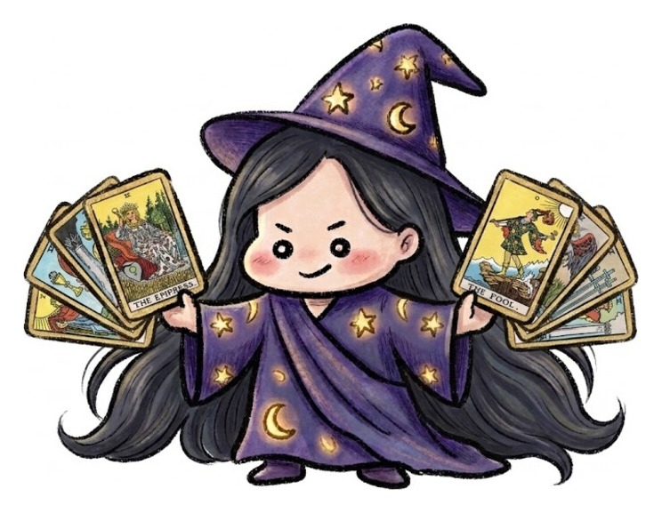

오늘의 타로 점괘
궁금한 주제를 고르고
78장 중 오늘의 카드 한 장을 뽑아보세요

안녕! 오늘 타로는 내가 봐줄게 🔮
지금 보고 싶은 건 총운이에요. 카드를 한 장 골라 탭해보세요
💡
안 좋게 느껴져도 괜찮아요, 이렇게 해보세요
광고 영역 (심사 통과 후 게재 예정)
⚠️ 타로 카드는 78장(메이저 아르카나 22장 + 마이너 아르카나 56장) 중 무작위로 뽑히며, 같은 날 같은 주제로 다시 방문하면 같은 카드가 나와요(날짜가 바뀌면 새 카드로 자동 갱신). 이 콘텐츠는 재미로 즐기는 운세이며 중요한 의사결정의 근거로 사용하지 마세요.